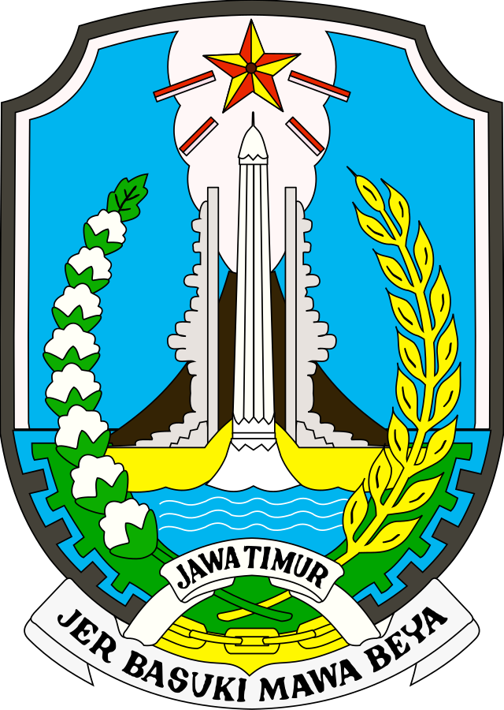

WebGIS Transportasi Jatim

Selamat datang di laman WebGIS Integrasi Transportasi Publik Provinsi Jawa Timur
Rencana Aksi
Kelola Metropolitan Terpadu
Jalanan Tenang dan Aman
Mobilitas Layak Huni dan Mudah Diakses
Angkutan Umum Modern Terintegrasi
×
Rencana Aksi SUMP+
<
>